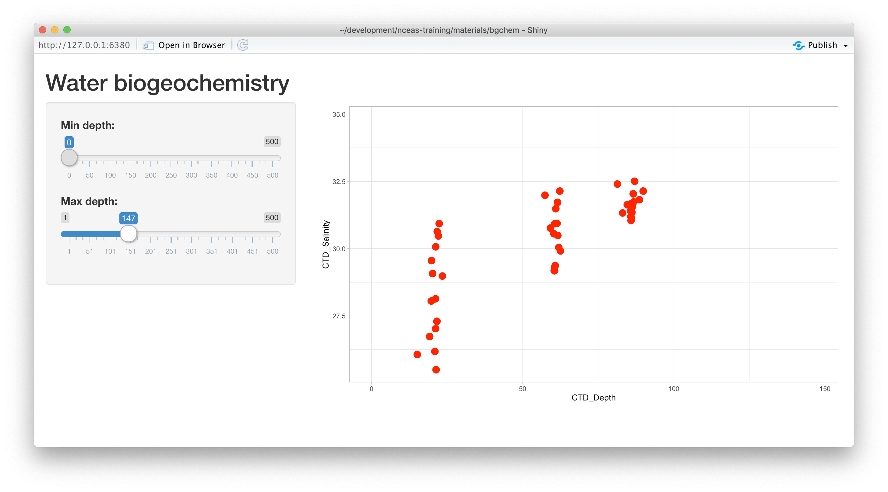
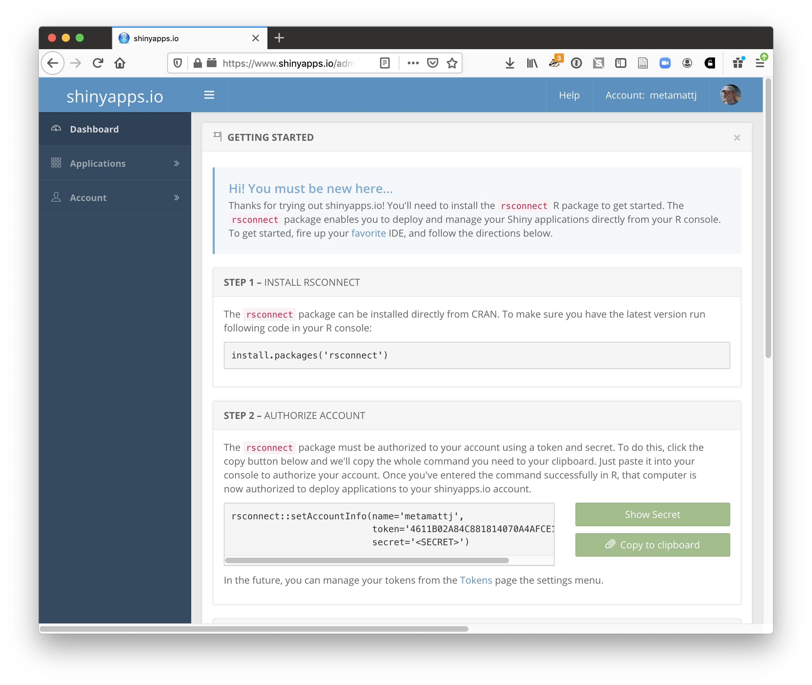

15 Extra Resources
15.1 Introduction to R
15.1.1 Learning Objectives
In this lesson we will:
- get oriented to the RStudio interface
- work with R in the console
- be introduced to built-in R functions
- learn to use the help pages
15.1.2 Introduction and Motivation
There is a vibrant community out there that is collectively developing increasingly easy to use and powerful open source programming tools. The changing landscape of programming is making learning how to code easier than it ever has been. Incorporating programming into analysis workflows not only makes science more efficient, but also more computationally reproducible. In this course, we will use the programming language R, and the accompanying integrated development environment (IDE) RStudio. R is a great language to learn for data-oriented programming because it is widely adopted, user-friendly, and (most importantly) open source!
So what is the difference between R and RStudio? Here is an analogy to start us off. If you were a chef, R is a knife. You have food to prepare, and the knife is one of the tools that you’ll use to accomplish your task.
And if R were a knife, RStudio is the kitchen. RStudio provides a place to do your work! Other tools, communication, community, it makes your life as a chef easier. RStudio makes your life as a researcher easier by bringing together other tools you need to do your work efficiently - like a file browser, data viewer, help pages, terminal, community, support, the list goes on. So it’s not just the infrastructure (the user interface or IDE), although it is a great way to learn and interact with your variables, files, and interact directly with git. It’s also data science philosophy, R packages, community, and more. So although you can prepare food without a kitchen and we could learn R without RStudio, that’s not what we’re going to do. We are going to take advantage of the great RStudio support, and learn R and RStudio together.
Something else to start us off is to mention that you are learning a new language here. It’s an ongoing process, it takes time, you’ll make mistakes, it can be frustrating, but it will be overwhelmingly awesome in the long run. We all speak at least one language; it’s a similar process, really. And no matter how fluent you are, you’ll always be learning, you’ll be trying things in new contexts, learning words that mean the same as others, etc, just like everybody else. And just like any form of communication, there will be miscommunications that can be frustrating, but hands down we are all better off because of it.
While language is a familiar concept, programming languages are in a different context from spoken languages, but you will get to know this context with time. For example: you have a concept that there is a first meal of the day, and there is a name for that: in English it’s “breakfast”. So if you’re learning Spanish, you could expect there is a word for this concept of a first meal. (And you’d be right: ‘desayuno’). We will get you to expect that programming languages also have words (called functions in R) for concepts as well. You’ll soon expect that there is a way to order values numerically. Or alphabetically. Or search for patterns in text. Or calculate the median. Or reorganize columns to rows. Or subset exactly what you want. We will get you increase your expectations and learn to ask and find what you’re looking for.
15.1.2.1 Resources
This lesson is a combination of excellent lessons by others. Huge thanks to Julie Lowndes for writing most of this content and letting us build on her material, which in turn was built on Jenny Bryan’s materials. I definitely recommend reading through the original lessons and using them as reference:
Julie Lowndes’ Data Science Training for the Ocean Health Index
Jenny Bryan’s lectures from STAT545 at UBC
Here are some other resources that we like for learning R:
- Learn R in the console with swirl
- The Introduction to R lesson in Data Carpentry’s R for data analysis course
- The Stat 545 course materials
- The QCBS Introduction to R lesson (in French)
Other resources:
15.1.3 R at the console
Launch RStudio/R.

Notice the default panes:
- Console (entire left)
- Environment/History (tabbed in upper right)
- Files/Plots/Packages/Help (tabbed in lower right)
FYI: you can change the default location of the panes, among many other things: Customizing RStudio.
An important first question: where are we?
If you’ve just opened RStudio for the first time, you’ll be in your Home directory. This is noted by the ~/ at the top of the console. You can see too that the Files pane in the lower right shows what is in the Home directory where you are. You can navigate around within that Files pane and explore, but note that you won’t change where you are: even as you click through you’ll still be Home: ~/.

OK let’s go into the Console, where we interact with the live R process.
We use R to calculate things for us, so let’s do some simple math.
## [1] 12You can assign the value of that mathematic operation to a variable, or object, in R. You do this using the assignment operator, <-.
Make an assignment and then inspect the object you just created.
## [1] 12In my head I hear, e.g., “x gets 12”.
All R statements where you create objects – “assignments” – have this form: objectName <- value.
I’ll write it in the console with a hash #, which is the way R comments so it won’t be evaluated.
## objectName <- value
## This is also how you write notes in your code to explain what you are doing.Object names cannot start with a digit and cannot contain certain other characters such as a comma or a space. You will be wise to adopt a convention for demarcating words in names.
Make an assignment
To inspect this variable, instead of typing it, we can press the up arrow key and call your command history, with the most recent commands first. Let’s do that, and then delete the assignment:
## [1] 2.5Another way to inspect this variable is to begin typing this_…and RStudio will automagically have suggested completions for you that you can select by hitting the tab key, then press return.
One more:
You can see that we can assign an object to be a word, not a number. In R, this is called a “string”, and R knows it’s a word and not a number because it has quotes " ". You can work with strings in your data in R pretty easily, thanks to the stringr and tidytext packages. We won’t talk about strings very much specifically, but know that R can handle text, and it can work with text and numbers together.
Strings and numbers lead us to an important concept in programming: that there are different “classes” or types of objects. An object is a variable, function, data structure, or method that you have written to your environment. You can see what objects you have loaded by looking in the “environment” pane in RStudio. The operations you can do with an object will depend on what type of object it is. This makes sense! Just like you wouldn’t do certain things with your car (like use it to eat soup), you won’t do certain operations with character objects (strings), for example.
Try running the following line in your console:
What happened? Why?
You may have noticed that when assigning a value to an object, R does not print anything. You can force R to print the value by using parentheses or by typing the object name:
weight_kg <- 55 # doesn't print anything
(weight_kg <- 55) # but putting parenthesis around the call prints the value of `weight_kg`## [1] 55## [1] 55Now that R has weight_kg in memory, we can do arithmetic with it. For instance, we may want to convert this weight into pounds (weight in pounds is 2.2 times the weight in kg):
## [1] 121We can also change a variable’s value by assigning it a new one:
## [1] 126.5This means that assigning a value to one variable does not change the values of other variables. For example, let’s store the animal’s weight in pounds in a new variable, weight_lb:
and then change weight_kg to 100.
What do you think is the current content of the object weight_lb? 126.5 or 220? Why?
You can also store more than one value in a single object. Storing a series of weights in a single object is a convenient way to perform the same operation on multiple values at the same time. One way to create such an object is the function c(), which stands for combine or concatenate.
Here we will create a vector of weights in kilograms, and convert them to pounds, saving the weight in pounds as a new object.
## [1] 55 25 12## [1] 121.0 55.0 26.415.1.3.1 Error messages are your friends
Implicit contract with the computer/scripting language: Computer will do tedious computation for you. In return, you will be completely precise in your instructions. Typos matter. Case matters. Pay attention to how you type.
Remember that this is a language, not unsimilar to English! There are times you aren’t understood – it’s going to happen. There are different ways this can happen. Sometimes you’ll get an error. This is like someone saying ‘What?’ or ‘Pardon’? Error messages can also be more useful, like when they say ‘I didn’t understand this specific part of what you said, I was expecting something else’. That is a great type of error message. Error messages are your friend. Google them (copy-and-paste!) to figure out what they mean.

And also know that there are errors that can creep in more subtly, without an error message right away, when you are giving information that is understood, but not in the way you meant. Like if I’m telling a story about tables and you’re picturing where you eat breakfast and I’m talking about data. This can leave me thinking I’ve gotten something across that the listener (or R) interpreted very differently. And as I continue telling my story you get more and more confused… So write clean code and check your work as you go to minimize these circumstances!
15.1.3.2 Logical operators and expressions
A moment about logical operators and expressions. We can ask questions about the objects we just made.
==means ‘is equal to’!=means ‘is not equal to’<means ` is less than’>means ` is greater than’<=means ` is less than or equal to’>=means ` is greater than or equal to’
## [1] FALSE FALSE FALSE## [1] TRUE FALSE FALSE## [1] TRUE TRUE TRUEShortcuts You will make lots of assignments and the operator
<-is a pain to type. Don’t be lazy and use=, although it would work, because it will just sow confusion later. Instead, utilize RStudio’s keyboard shortcut: Alt + - (the minus sign). Notice that RStudio automagically surrounds<-with spaces, which demonstrates a useful code formatting practice. Code is miserable to read on a good day. Give your eyes a break and use spaces. RStudio offers many handy keyboard shortcuts. Also, Alt+Shift+K brings up a keyboard shortcut reference card.
15.1.3.3 Clearing the environment
Now look at the objects in your environment (workspace) – in the upper right pane. The workspace is where user-defined objects accumulate.

You can also get a listing of these objects with a few different R commands:
## [1] "airtemps"
## [2] "ak_map"
## [3] "ak_map_3857"
## [4] "ak_regions"
## [5] "ak_regions_3338"
## [6] "amm"
## [7] "annual_esc"
## [8] "assign_species_name"
## [9] "bbox"
## [10] "bg_chem"
## [11] "catch"
## [12] "catch_clean"
## [13] "catch_data"
## [14] "catch_joined"
## [15] "catch_long"
## [16] "catch_original"
## [17] "catch_wide"
## [18] "celsius"
## [19] "celsius_to_fahr"
## [20] "celsius1"
## [21] "celsius2"
## [22] "celsius3"
## [23] "celsius4"
## [24] "cities_df"
## [25] "convert_temps"
## [26] "custom_theme"
## [27] "dates_df"
## [28] "environment_info"
## [29] "epsg3338"
## [30] "esc"
## [31] "fahr_to_celsius"
## [32] "ggmap_bbox_to_3857"
## [33] "i"
## [34] "kodiak_esc"
## [35] "locations"
## [36] "m"
## [37] "mean_region"
## [38] "my_theme"
## [39] "n_region"
## [40] "nest_pred"
## [41] "nests"
## [42] "nests_species"
## [43] "nitrate"
## [44] "nitrite"
## [45] "pal"
## [46] "phos"
## [47] "pop"
## [48] "pop_3338"
## [49] "pop_3857"
## [50] "pop_4326"
## [51] "pop_joined"
## [52] "pop_mgmt_3338"
## [53] "pop_mgmt_338"
## [54] "pop_region"
## [55] "pop_region_3338"
## [56] "pop_region_4326"
## [57] "pred"
## [58] "pred_species"
## [59] "pred_total"
## [60] "ratio"
## [61] "region_defs"
## [62] "result"
## [63] "rivers_3338"
## [64] "scatterplot"
## [65] "science_rocks"
## [66] "sites_df"
## [67] "species"
## [68] "SSE_catch"
## [69] "tbls"
## [70] "temps_df"
## [71] "this_is_a_really_long_name"
## [72] "webpage"
## [73] "weight_kg"
## [74] "weight_lb"
## [75] "x"## [1] "airtemps"
## [2] "ak_map"
## [3] "ak_map_3857"
## [4] "ak_regions"
## [5] "ak_regions_3338"
## [6] "amm"
## [7] "annual_esc"
## [8] "assign_species_name"
## [9] "bbox"
## [10] "bg_chem"
## [11] "catch"
## [12] "catch_clean"
## [13] "catch_data"
## [14] "catch_joined"
## [15] "catch_long"
## [16] "catch_original"
## [17] "catch_wide"
## [18] "celsius"
## [19] "celsius_to_fahr"
## [20] "celsius1"
## [21] "celsius2"
## [22] "celsius3"
## [23] "celsius4"
## [24] "cities_df"
## [25] "convert_temps"
## [26] "custom_theme"
## [27] "dates_df"
## [28] "environment_info"
## [29] "epsg3338"
## [30] "esc"
## [31] "fahr_to_celsius"
## [32] "ggmap_bbox_to_3857"
## [33] "i"
## [34] "kodiak_esc"
## [35] "locations"
## [36] "m"
## [37] "mean_region"
## [38] "my_theme"
## [39] "n_region"
## [40] "nest_pred"
## [41] "nests"
## [42] "nests_species"
## [43] "nitrate"
## [44] "nitrite"
## [45] "pal"
## [46] "phos"
## [47] "pop"
## [48] "pop_3338"
## [49] "pop_3857"
## [50] "pop_4326"
## [51] "pop_joined"
## [52] "pop_mgmt_3338"
## [53] "pop_mgmt_338"
## [54] "pop_region"
## [55] "pop_region_3338"
## [56] "pop_region_4326"
## [57] "pred"
## [58] "pred_species"
## [59] "pred_total"
## [60] "ratio"
## [61] "region_defs"
## [62] "result"
## [63] "rivers_3338"
## [64] "scatterplot"
## [65] "science_rocks"
## [66] "sites_df"
## [67] "species"
## [68] "SSE_catch"
## [69] "tbls"
## [70] "temps_df"
## [71] "this_is_a_really_long_name"
## [72] "webpage"
## [73] "weight_kg"
## [74] "weight_lb"
## [75] "x"If you want to remove the object named weight_kg, you can do this:
To remove everything:
or click the broom in RStudio’s Environment pane.
15.1.4 R functions, help pages
So far we’ve learned some of the basic syntax and concepts of R programming, and how to navigate RStudio, but we haven’t done any complicated or interesting programming processes yet. This is where functions come in!
A function is a way to group a set of commands together to undertake a task in a reusable way. When a function is executed, it produces a return value. We often say that we are “calling” a function when it is executed. Functions can be user defined and saved to an object using the assignment operator, so you can write whatever functions you need, but R also has a mind-blowing collection of built-in functions ready to use. To start, we will be using some built in R functions.
All functions are called using the same syntax: function name with parentheses around what the function needs in order to do what it was built to do. The pieces of information that the function needs to do its job are called arguments. So the syntax will look something like: result_value <- function_name(argument1 = value1, argument2 = value2, ...).
15.1.4.1 A simple example
To take a very simple example, let’s look at the mean() function. As you might expect, this is a function that will take the mean of a set of numbers. Very convenient!
Let’s create our vector of weights again:
and use the mean function to calculate the mean weight.
## [1] 30.6666715.1.4.2 Getting help
What if you know the name of the function that you want to use, but don’t know exactly how to use it? Thankfully RStudio provides an easy way to access the help documentation for functions.
To access the help page for mean, enter the following into your console:
The help pane will show up in the lower right hand corner of your RStudio.
The help page is broken down into sections:
- Description: An extended description of what the function does.
- Usage: The arguments of the function(s) and their default values.
- Arguments: An explanation of the data each argument is expecting.
- Details: Any important details to be aware of.
- Value: The data the function returns.
- See Also: Any related functions you might find useful.
- Examples: Some examples for how to use the function.
15.1.4.3 Your turn
Exercise: Talk to your neighbor(s) and look up the help file for a function that you know or expect to exist. Here are some ideas:
?getwd(),?plot(),min(),max(),?log()).
And there’s also help for when you only sort of remember the function name: double-questionmark:
Not all functions have (or require) arguments:
## [1] "Tue Mar 16 10:15:14 2021"15.1.4.4 Use a function to read a file into R
So far we have learned how to assign values to objects in R, and what a function is, but we haven’t quite put it all together yet with real data yet. To do this, we will introduce the function read.csv, which will be in the first lines of many of your future scripts. It does exactly what it says, it reads in a csv file to R.
Since this is our first time using this function, first access the help page for read.csv. This has a lot of information in it, as this function has a lot of arguments, and the first one is especially important - we have to tell it what file to look for. Let’s get a file!
15.1.4.4.1 Download a file from the Arctic Data Center
Follow these steps to get set up for the next exercise:
- Navigate to this dataset by Craig Tweedie that is published on the Arctic Data Center. Craig Tweedie. 2009. North Pole Environmental Observatory Bottle Chemistry. Arctic Data Center. doi:10.18739/A25T3FZ8X.
- Download the first csv file called “BGchem2008data.csv” by clicking the “download” button next to the file.
- Move this file from your
Downloadsfolder into a place you can more easily find it. Eg: a folder calleddatain your previously-created directoryarctic_training_files.
Now we have to tell read.csv how to find the file. We do this using the file argument which you can see in usage section in the help page. In R, you can either use absolute paths (which will start with your home directory ~/) or paths relative to your current working directory. RStudio has some great autocomplete capabilities when using relative paths, so we will go that route. Assuming you have moved your file to a folder within arctic_training_files called data, and your working directory is your home directory (~/) your read.csv call will look like this:
You should now have an object of the class data.frame in your environment called bg_chem. Check your environment pane to ensure this is true.
Note that in the help page there are a whole bunch of arguments that we didn’t use in the call above. Some of the arguments in function calls are optional, and some are required. Optional arguments will be shown in the usage section with a name = value pair, with the default value shown. If you do not specify a name = value pair for that argument in your function call, the function will assume the default value (example: header = TRUE for read.csv). Required arguments will only show the name of the argument, without a value. Note that the only required argument for read.csv is file.
You can always specify arguments in name = value form. But if you do not, R attempts to resolve by position. So above, it is assumed that we want file = "data/BGchem2008data.csv", since file is the first argument. If we wanted to add another argument, say stringsAsFactors, we need to specify it explicitly using the name = value pair, since the second argument is header. For functions I call often, I use this resolve by position for the first argument or maybe the first two. After that, I always use name = value.
Many R users (including myself) will override the default stringsAsFactors argument using the following call:
15.1.5 Using data.frames
A data.frame is a two dimensional data structure in R that mimics spreadsheet behavior. It is a collection of rows and columns of data, where each column has a name and represents a variable, and each row represents a measurement of that variable. When we ran read.csv, the object bg_chem that we created is a data.frame. There are a a bunch of ways R and RStudio help you explore data frames. Here are a few, give them each a try:
- click on the word
bg_chemin the environment pane - click on the arrow next to
bg_chemin the environment pane - execute
head(bg_chem)in the console - execute
View(bg_chem)in the console
Usually we will want to run functions on individual columns in a data.frame. To call a specific column, we use the list subset operator $. Say you want to look at the first few rows of the Date column only. This would do the trick:
## [1] "2008-03-21" "2008-03-21" "2008-03-21" "2008-03-21"
## [5] "2008-03-21" "2008-03-22"How about calculating the mean temperature of all the CTD samples?
## [1] -0.9646915Or, if we want to save this to a variable to use later:
You can also create basic plots using the list subset operator.
There are many more advancted tools and functions in R that will enable you to make better plots using cleaner syntax, we will cover some of these later in the course.
15.1.5.1 Your Turn
Exercise: Spend a few minutes exploring this dataset. Try out different functions on columns using the list subset operator and experiment with different plots.
15.1.5.2 I just entered a command and nothing is happening
It may be because you didn’t complete a command: is there a little + in your console? R is saying that it is waiting for you to finish. In the example below, I need to close that parenthesis.
You can either just type the closing parentheses here and push return, or push the esc button twice.
15.1.5.3 R says my object is not found
New users will frequently see errors that look like this: Error in mean(myobject) : object 'myobject' not found
This means that you do not have an object called myobject saved in your environment. The common reasons for this are:
- typo: make sure your object name is spelled exactly like what shows up in the console. Remember R is case sensitive.
- not writing to a variable: note that the object is only saved in the environment if you use the assignment operator, eg:
myobject <- read.csv(...) - not executing the line in your script: remember that writing a line of code in a script or RMarkdown document is not the same as writing in the console, you have to execute the line of code using command + enter or using one of the several ways in the RStudio graphical user interface.
15.2 Introduction to Shiny
15.2.1 Learning Objectives
In this lesson we will:
- review the capabilities in Shiny applications
- learn about the basic layout for Shiny interfaces
- learn about the server component for Shiny applications
- build a simple shiny application for interactive plotting
15.2.2 Overview
Shiny is an R package for creating interactive data visualizations embedded in a web application that you and your colleagues can view with just a web browser. Shiny apps are relatively easy to construct, and provide interactive features for letting others share and explore data and analyses.
There are some really great examples of what Shiny can do on the RStudio webite like this one exploring movie metadata. A more scientific example is a tool from the SASAP project exploring proposal data from the Alaska Board of Fisheries.

Most any kind of analysis and visualization that you can do in R can be turned into a useful interactive visualization for the web that lets people explore your data more intuitively But, a Shiny application is not the best way to preserve or archive your data. Instead, for preservation use a repository that is archival in its mission like the KNB Data Repository, Zenodo, or Dryad. This will assign a citable identfier to the specific version of your data, which you can then read in an interactive visualiztion with Shiny.
For example, the data for the Alaska Board of Fisheries application is published on the KNB and is citable as:
Meagan Krupa, Molly Cunfer, and Jeanette Clark. 2017. Alaska Board of Fisheries Proposals 1959-2016. Knowledge Network for Biocomplexity. doi:10.5063/F1QN652R.
While that is the best citation and archival location of the dataset, using Shiny, one can also provide an easy-to-use exploratory web application that you use to make your point that directly loads the data from the archival site. For example, the Board of Fisheries application above lets people who are not inherently familiar with the data to generate graphs showing the relationships between the variables in the dataset.
We’re going to create a simple shiny app with two sliders so we can interactively control inputs to an R function. These sliders will allow us to interactively control a plot.
15.2.3 Create a sample shiny application
- File > New > Shiny Web App…
- Set some fields:

- Name it “myapp” or something else
- Select “Single File”
- Choose to create it in a new folder called ‘shiny-demo’
- Click Create
RStudio will create a new file called app.R that contains the Shiny application.
Run it by choosing Run App from the RStudio editor header bar. This will bring up
the default demo Shiny application, which plots a histogram and lets you control
the number of bins in the plot.

Note that you can drag the slider to change the number of bins in the histogram.
15.2.4 Interactive scatterplots
Let’s modify this application to plot water biogeochemistry data in a scatterplot, and allow aspects of the plot to be interactively changed.
15.2.4.1 Load data for the example
Follow these steps to get set up for the next exercise:
- Navigate to this dataset by Craig Tweedie that is published on the Arctic Data Center. Craig Tweedie. 2009. North Pole Environmental Observatory Bottle Chemistry. Arctic Data Center. doi:10.18739/A25T3FZ8X.
- Right click the download button next to the file “BGChem2008data.csv” and select “copy link addres.s”
- Read the data into the application using
read.csv
The data contains chemistry measurements at various times and stations.
data_url <- "https://arcticdata.io/metacat/d1/mn/v2/object/urn%3Auuid%3A35ad7624-b159-4e29-a700-0c0770419941"
bg_chem <- read.csv(data_url, stringsAsFactors = FALSE)
# Sometimes you need to wrap the web address in url() on some platforms
#bg_chem <- read.csv(url(data_url, method = "libcurl"), stringsAsFactors = FALSE)
names(bg_chem)## [1] "Date" "Time"
## [3] "Station" "Latitude"
## [5] "Longitude" "Target_Depth"
## [7] "CTD_Depth" "CTD_Salinity"
## [9] "CTD_Temperature" "Bottle_Salinity"
## [11] "d18O" "Ba"
## [13] "Si" "NO3"
## [15] "NO2" "NH4"
## [17] "P" "TA"
## [19] "O2"15.2.4.2 Add a simple scatterplot using ggplot
A number of chemistry parameters are sensitive to depth, so let’s start by plotting CTD_Salinitiy as
a function of CTD_Depth. We do so by switching out the histogram code for a simple ggplot, like so:
server <- function(input, output) {
output$depthPlot <- renderPlot({
ggplot(bg_chem, mapping = aes(CTD_Depth, CTD_Salinity)) +
geom_point(colour="red", size=4) +
theme_light()
})
}If you now reload the app, it will display the simple scatterplot instead of the histogram. At this point, we haven’t added any interactivity.
In a Shiny application, the server function provides the part of the application
that creates our interactive components, and returns them to the user interface (ui)
to be displayed on the page.
15.2.4.3 Add sliders to set the min depth and max depth for the X axis
To make the plot interactive, first we need to modify our user interface to include
widgits that we’ll use to control the plot. Specifically, we will add a new slider
for setting the mindepth parameter, and modify the existing slider to be used for
the maxdepth parameter. To do so, modify the sidebarPanel() call to include two
sliderInput() function calls:
sidebarPanel(
sliderInput("mindepth", "Min depth:", min = 0, max = 500, value = 0),
sliderInput("maxdepth", "Max depth:", min = 1, max = 500, value = 50)
)If you reload the app, you’ll see two new sliders, but if you change them, they don’t make any changes to the plot. Let’s fix that.
15.2.4.4 Connect the slider values to the plot
Finally, to make the plot interactive, we can use the input and output variables
that are passed into the server function to access the current values of the sliders.
In Shiny, each UI component is given an input identifier when it is created, which is used as the name of the value in the input list. So, we can access the minimum depth as input$mindepth and
the max as input$maxdepth. Let’s use these values now by adding limits to our X axis
in the ggplot:
ggplot(bg_chem, mapping = aes(CTD_Depth, CTD_Salinity)) +
geom_point(colour="red", size=4) +
xlim(input$mindepth,input$maxdepth) +
theme_light()At this point, we have a fully interactive plot, and the sliders can be used to change the min and max of the Depth axis.

Looks so shiny!
15.2.4.5 Negative depths?
What happens if a clever user sets the minimum for the X axis at a greater value than the maximum?
You’ll see that the direction of the X axis becomes reversed, and the plotted points display right
to left. This is really an error condition. Rather than use two independent sliders, we can modify
the first slider to output a range of values, which will prevent the min from being greater than
the max. You do so by setting the value of the slider to a vector of length 2, representing
the default min and max for the slider, such as value = c(0,100). So, delete the second slider,
rename the first, and provide a vector for the value, like this:
Now, modify the ggplot to use this new depth slider value, which now will be returned
as a vector of length 2. The first element of the depth vector is the min, and the
second is the max value on the slider.
ggplot(bg_chem, mapping = aes(CTD_Depth, CTD_Salinity)) +
geom_point(colour="red", size=4) +
xlim(input$depth[1],input$depth[2]) +
theme_light()
15.2.5 Shiny architecture
A Shiny application consists of two functions, the ui and the server. The ui
function is responsible for drawing the web page, while the server is responsible
for any calculations and for creating any dynamic components to be rendered.
Each time that a user makes a change to one of the interactive widgets, the ui
grabs the new value (say, the new slider min and max) and sends a request to the
server to re-render the output, passing it the new input values that the user
had set. These interactions can sometimes happen on one computer (e.g., if the
application is running in your local RStudio instance). Other times, the ui runs on
the web browser on one computer, while the server runs on a remote computer somewhere
else on the Internet (e.g., if the application is deployed to a web server).
15.2.6 Extending the user interface with dynamic plots
If you want to display more than one plot in your application, and provide
a different set of controls for each plot, the current layout would be too simple.
Next we will extend the application to break the page up into vertical sections, and
add a new plot in which the user can choose which variables are plotted. The current
layout is set up such that the FluidPage contains the title element, and then
a sidebarLayout, which is divided horizontally into a sidebarPanel and a
mainPanel.

15.2.6.1 Vertical layout
To extend the layout, we will first nest the existing sidebarLayout in a new
verticalLayout, which simply flows components down the page vertically. Then
we will add a new sidebarLayout to contain the bottom controls and graph.

This mechanism of alternately nesting vertical and horizontal panels can be used
to segment the screen into boxes with rules about how each of the panels is resized,
and how the content flows when the browser window is resized. The sidebarLayout
works to keep the sidebar about 1/3 of the box, and the main panel about 2/3, which
is a good proportion for our controls and plots. Add the verticalLayout, and the
second sidebarLayout for the second plot as follows:
verticalLayout(
# Sidebar with a slider input for depth axis
sidebarLayout(
sidebarPanel(
sliderInput("depth",
"Depth:",
min = 1,
max = 500,
value = c(1, 100))
),
# Show a plot of the generated distribution
mainPanel(
plotOutput("depthPlot")
)
),
tags$hr(),
sidebarLayout(
sidebarPanel(
selectInput("x_variable", "X Variable", cols, selected = "CTD_Salinity"),
selectInput("y_variable", "Y Variable", cols, selected = "d18O"),
selectInput("color_variable", "Color", cols, selected = "P")
),
# Show a plot with configurable axes
mainPanel(
plotOutput("varPlot")
)
),
tags$hr()Note that the second sidebarPanel uses three selectInput elements to provide dropdown
menus with the variable columns (cols) from our data frame. To manage that, we need to
first set up the cols variable, which we do by selecting only the numeric variables
from the bg_chem data frame, and then saving the name in a variable:
bg_chem <- read.csv(url(data_url, method="libcurl"), stringsAsFactors = FALSE) %>%
select(-Date, -Time, -Station)
cols <- names(bg_chem)Don’t forget to add library(dplyr) to the library imports at the top.
15.2.6.2 Add the dynamic plot
Because we named the second plot varPlot in our UI section, we now need to modify
the server to produce this plot. Its very similar to the first plot, but this time
we want to use the selected vsriables from the user controls to choose which
variables are plotted. These variable names from the $input are character
strings, and so would not be recognized as symbols in the aes mapping in ggplot.
Instead, we can use aes_string() to provide character names for the variables to
be used in the mappings.
output$varPlot <- renderPlot({
ggplot(bg_chem, mapping = aes_string(x = input$x_variable,
y = input$y_variable,
color = input$color_variable)) +
geom_point(size=4) +
scale_color_gradient2(low="midnightblue",
mid="white",
high="firebrick",
midpoint = mean(bg_chem[,input$color_variable])) +
theme_light()Notice that we also use scale_color_gradient2 to set up a continuous color
scale that uses the mean of the chosen color variable as the midpoint of the
color ramp, which makes the display balance nicely.
15.2.7 Finishing touches: data citation
Citing the data that we used for this application is the right thing to do, and easy.
You can add arbitrary HTML to the layout using utility functions in the tags list.
# Application title
titlePanel("Water biogeochemistry"),
p("Data for this application are from: "),
tags$ul(
tags$li("Craig Tweedie. 2009. North Pole Environmental Observatory Bottle Chemistry. Arctic Data Center.",
tags$a("doi:10.18739/A25T3FZ8X", href="http://doi.org/10.18739/A25T3FZ8X")
)
),
tags$br(),
tags$hr(),The final application shows the data citation, the depth plot, and the configurable scatterplot in three distinct panels.

15.2.8 Publishing Shiny applications
Once you’ve finished your app, you’ll want to share it with others. To do so, you need to
publish it to a server that is set up to handle Shiny apps.
Your main choices are:
- shinyapps.io (Hosted by RStudio)
- This is a service offered by RStudio, which is initially free for 5 or fewer apps and for limited run time, but has paid tiers to support more demanding apps. You can deploy your app using a single button push from within RStudio.
- Shiny server (On premises)
- This is an open source server which you can deploy for free on your own hardware. It requires more setup and configuration, but it can be used without a fee.
- RStudio connect (On premises)
- This is a paid product you install on your local hardware, and that contains the most advanced suite of services for hosting apps and RMarkdown reports. You can publish using a single button click from RStudio.
A comparison of publishing features is available from RStudio.
15.2.8.1 Publishing to shinyapps.io
The easiest path is to create an account on shinyapps.io, and then configure RStudio to use that account for publishing. Instructions for enabling your local RStudio to publish to your account are displayed when you first log into shinyapps.io:

Once your account is configured locally, you can simply use the Publish button from the
application window in RStudio, and your app will be live before you know it!

15.2.9 Summary
Shiny is a fantastic way to quickly and efficiently provide data exploration for your data and code. We highly recommend it for its interactivity, but an archival-quality repository is the best long-term home for your data and products. In this example, we used data drawn directly from the KNB repository in our Shiny app, which offers both the preservation guarantees of an archive, plus the interactive data exploration from Shiny. You can utilize the full power of R and the tidyverse for writing your interactive applications.
15.2.10 Full source code for the final application
#
# This is a demonstration Shiny web application showing how to build a simple
# data exploration application.
#
library(shiny)
library(ggplot2)
library(dplyr)
library(tidyr)
# Load data from Arctic Data Center
data_url <- "https://arcticdata.io/metacat/d1/mn/v2/object/urn%3Auuid%3A35ad7624-b159-4e29-a700-0c0770419941"
bg_chem <- read.csv(url(data_url, method="libcurl"), stringsAsFactors = FALSE) %>%
select(-Date, -Time, -Station)
cols <- names(bg_chem)
# Define UI for application that draws two scatter plots
ui <- fluidPage(
# Application title
titlePanel("Water biogeochemistry"),
p("Data for this application are from: "),
tags$ul(
tags$li("Craig Tweedie. 2009. North Pole Environmental Observatory Bottle Chemistry. Arctic Data Center.",
tags$a("doi:10.18739/A25T3FZ8X", href="http://doi.org/10.18739/A25T3FZ8X")
)
),
tags$br(),
tags$hr(),
verticalLayout(
# Sidebar with a slider input for depth axis
sidebarLayout(
sidebarPanel(
sliderInput("depth",
"Depth:",
min = 1,
max = 500,
value = c(1, 100))
),
# Show a plot of the generated distribution
mainPanel(
plotOutput("depthPlot")
)
),
tags$hr(),
# Sidebar with a select inputs to choose variables to plot
sidebarLayout(
sidebarPanel(
selectInput("x_variable", "X Variable", cols, selected = "CTD_Salinity"),
selectInput("y_variable", "Y Variable", cols, selected = "d18O"),
selectInput("color_variable", "Color", cols, selected = "P")
),
# Show a plot with configurable axes
mainPanel(
plotOutput("varPlot")
)
),
tags$hr()
)
)
# Define server logic required to draw both plots
server <- function(input, output) {
output$depthPlot <- renderPlot({
ggplot(bg_chem, mapping = aes(x = CTD_Depth, y = CTD_Salinity)) +
geom_point(size=4, color="firebrick") +
xlim(input$depth[1],input$depth[2]) +
theme_light()
})
output$varPlot <- renderPlot({
ggplot(bg_chem, mapping = aes_string(x = input$x_variable,
y = input$y_variable,
color = input$color_variable)) +
geom_point(size=4) +
scale_color_gradient2(low="midnightblue",
mid="white",
high="firebrick",
midpoint = mean(bg_chem[,input$color_variable])) +
theme_light()
})
}
# Run the application
shinyApp(ui = ui, server = server)15.2.11 Resources
15.3 Collaborating using Git
15.3.1 Learning Objectives
In this lesson, you will learn:
- New mechanisms to collaborate using git
- What is a Pull Request in Github?
- How top contribute code to colleague’s repository using Pull Requests
- What is a branch in git?
- How to use a branch to organize code
- What is a tag in git and how is it useful for collaboration?
15.3.2 Pull requests
We’ve shown in other chapters how to directly collaborate on a repository with
colleagues by granting them write privileges as a collaborator to your repository.
This is useful with close collaborators, but also grants them tremendous latitude to
change files and analyses, to remove files from the working copy, and to modify all
files in the repository.
Pull requests represent a mechanism to more judiciously collaborate, one in which a collaborator can suggest changes to a repository, the owner and collaborator can discuss those changes in a structured way, and the owner can then review and accept all or only some of those changes to the repository. This is useful with open source code where a community is contributing to shared analytical software, to students in a lab working on related but not identical projects, and to others who want the capability to review changes as they are submitted.
To use pull requests, the general procedure is as follows. The collaborator first
creates a fork of the owner’s repository, which is a cloned copy of the original
that is linked to the original. This cloned copy is in the collaborator’s GitHub
account, which means they have the ability to make changes to it. But they don’t have
the right to change the original owner’s copy. So instead, they clone their GitHub
copy onto their local machine, which makes the collaborator’s GitHub copy the origin
as far as they are concerned. In this scenario, we generally refer to the Collaborator’s
repository as the remote origin, and the Owner’s repository as upstream.
Pull requests are a mechanism for someone that has a forked copy of a repository to request that the original owner review and pull in their changes. This allows them to collaborate, but keeps the owner in control of exactly what changed.
15.3.3 Exercise: Create and merge pull requests
In this exercise, work in pairs. Each pair should create a fork of their partner’s
training repository, and then clone that onto their local machine. Then they can make changes
to that forked repository, and, from the GitHub interface, create a pull request that the
owner can incorporate. We’ll walk through the process from both the owner and the collaborator’s
perspectives. In the following example, mbjones will be the repository owner, and metamattj
will be the collaborator.
Change settings (Owner): Edit the github settings file for your
training-testrepository, and ensure that the collaborator does not have editing permission. Also, be sure that all changes in your repository are committed and pushed to theoriginserver.Fork (Collaborator): Visit the GitHub page for the owner’s GitHub repository on which you’d like to make changes, and click the
Forkbutton. This will create a clone of that repository in your own GitHub account. You will be able to make changes to this forked copy of the repository, but you will not be able to make direct changes to the owner’s copy. After you have forked the repository, visit your GitHub page for your forked repository, copy the url, and create a new RStudio project using that repository url.

- Edit README.md (Collaborator): The collaborator should make one or more changes to the README.md
file from their cloned copy of the repository,
committhe changes, andpushthem to their forked copy. At this point, their local repo and github copy both have the changes that they made, but the owner’s repository has not yet been changed. When you now visit your forked copy of the repository on Github, you will now see your change has been made, and it will say thatThis branch is 1 commit ahead of mbjones:master.

- Create Pull Request (Collaborator): At this point, click the aptly named
Pull Requestbutton to create a pull request which will be used to ask that the owner pull in your changes to their copy.

When you click Create pull request, provide a brief summary of the request, and a more detailed message to start a conversation about what you are requesting. It’s helpful to be polite and concise while providing adequate context for your request. This will start a conversation with the owner in which you can discuss your changes, they can easily review the changes, and they can ask for further changes before the accept and pull them in. The owner of the repository is in control and determines if and when the changes are merged.

- Review pull request (Owner): The owner will get an email notification that the Pull Request was created, and can see the PR listed in their
Pull requeststab of their repsoitory.

The owner can now initiate a conversation about the change, requesting further changes. The interface indicates whether there are any conflicts with the changes, and if not, gives the owner the option to Merge pull request.

- Merge pull request (Owner): Once the owner thinks the changes look good, they can click the
Merge pull requestbutton to accept the changes and pull them into their repository copy. Edit the message, and then clickConfirm merge.

Congratulations, the PR request has now been merged into the owner’s copy, and has been closed with a note indicating that the changes have been made.

- Sync with owner (Collaborator): Now that the pull request has been merged, there is a
new merge commit in the Owner’s repository that is not present in either of the
collaborator’s repositories. To fix that,
one needs to pull changes from the
upstreamrepository into the collaborator’s local repository, and then push those changes from that local repository to the collaborator’soriginrepository.
To add a reference to the upstream remote (the repository you made your fork from), in the terminal, run:
git remote add upstream https://github.com/ORIGINAL_OWNER/ORIGINAL_REPOSITORY.git
Then to pull from the master branch of the upstream repository, in the terminal, run:
git pull upstream master
At this point, the collaborator is fully up to date.
15.3.4 Branches
Branches are a mechanism to isolate a set of changes in their own thread, allowing multiple
types of work to happen in parallel on a repository at the same time. These are most often
used for trying out experimental work, or for managing bug fixes for historical releases
of software. Here’s an example graph showing a branch2.1 that has changes in parallel
to the main branch of development:

The default branch in almost all repositories is called master, and it is the
branch that is typically shown in the GitHub interface and elsewhere.
There are many mechanisms to create branches. The one we will try is
through RStudio, in which we use the branch dialog to create and switch
between branches.
15.3.4.1 Exercise:
Create a new branch in your training repository called exp-1, and then make
changes to the RMarkdown files in the directory. Commit and push those changes
to the branch. Now you can switch between branches using the github interface.

Borer, Elizabeth, Eric Seabloom, Matthew B. Jones, and Mark Schildhauer. 2009. “Some Simple Guidelines for Effective Data Management.” Bulletin of the Ecological Society of America 90: 205–14. https://doi.org/10.1890/0012-9623-90.2.205.
Hampton, Stephanie E, Sean Anderson, Sarah C Bagby, Corinna Gries, Xueying Han, Edmund Hart, Matthew B Jones, et al. 2015. “The Tao of Open Science for Ecology.” Ecosphere 6 (July). https://doi.org/http://dx.doi.org/10.1890/ES14-00402.1.
Munafò, Marcus R., Brian A. Nosek, Dorothy V. M. Bishop, Katherine S. Button, Christopher D. Chambers, Nathalie Percie du Sert, Uri Simonsohn, Eric-Jan Wagenmakers, Jennifer J. Ware, and John P. A. Ioannidis. 2017. “A Manifesto for Reproducible Science.” Nature Human Behaviour 1 (1): 0021. https://doi.org/10.1038/s41562-016-0021.